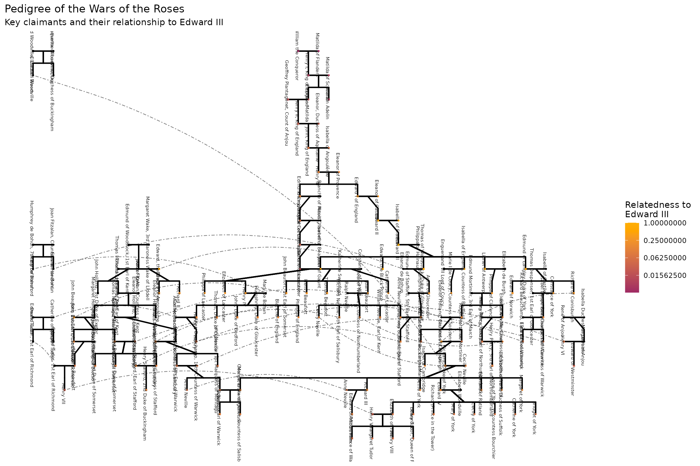

vignettes/wars-of-the-roses.Rmd
wars-of-the-roses.RmdThe Wars of the Roses (1455–1487) were a series of civil wars for the English throne fought between two branches of the royal House of Plantagenet: Lancaster (red rose) and York (white rose). Both houses descended from Edward III, and the conflict was, at its core, a dispute about which line of descent granted the stronger claim.
The war_of_the_roses dataset encodes this pedigree — 151
individuals from Edward III to Henry VII — including names, Wikipedia
URLs, and twin information. In this vignette, we use the pedigree to
trace the competing dynastic claims and ask: by the rules of succession,
who should have been king?
library(pedigreedata)
library(dplyr)
library(quadprog)
data(war_of_the_roses)
head(war_of_the_roses[, c("id", "name", "sex", "momID", "dadID", "famID")])
#> id name sex momID dadID famID
#> 1 1 Edward III M 116 115 1
#> 2 2 Philippa of Hainault F NA NA 1
#> 3 3 Edward, the Black Prince M 2 1 1
#> 4 4 Joan of Kent F 95 94 1
#> 5 5 Isabella of England, Countess of Bedford F 2 1 1
#> 6 6 Enguerrand VII Lord of Coucy M NA NA 1
cat("Total individuals: ", nrow(war_of_the_roses), "\n")
#> Total individuals: 151
cat(
"Named individuals: ",
sum(!is.na(war_of_the_roses$name) & war_of_the_roses$name != ""), "\n"
)
#> Named individuals: 151
cat(
"Founders (no parents recorded): ",
sum(is.na(war_of_the_roses$momID) & is.na(war_of_the_roses$dadID)), "\n"
)
#> Founders (no parents recorded): 42
cat(
"With Wikipedia URLs: ",
sum(!is.na(war_of_the_roses$url) & war_of_the_roses$url != ""), "\n"
)
#> With Wikipedia URLs: 151The pedigree is rooted at Edward III and his contemporaries whose children intermarried into the royal family.
war_of_the_roses |>
filter(is.na(momID) & is.na(dadID), sex != "U") |>
select(id, name, sex) |>
arrange(id)
#> id name sex
#> 1 2 Philippa of Hainault F
#> 2 6 Enguerrand VII Lord of Coucy M
#> 3 7 Elizabeth de Burgh F
#> 4 11 Constance of Castile F
#> 5 12 Katherine Swynford F
#> 6 14 Isabella of Castile F
#> 7 18 Anne of Bohemia F
#> 8 19 Isabella of Valois F
#> 9 27 John I of Portugal M
#> 10 33 Joan of Navarre F
#> 11 35 Catherine of Valois F
#> 12 50 Ralph Neville M
#> 13 68 Humphrey de Bohun, 7th Earl of Hereford M
#> 14 69 Joan Fitzalan, Countess of Hereford F
#> 15 71 Thomas Holland 1st Earl of Kent M
#> 16 72 Edmund Mortimer, 3rd Earl of March M
#> 17 75 Alice FitzAlan, Countess of Kent F
#> 18 76 Owen Tudor M
#> 19 79 Margaret Beauchamp of Bletso F
#> 20 81 Thomas Montagu, 4th Earl of Salisbury M
#> 21 86 Richard Beauchamp, 13th Earl of Warwick M
#> 22 87 Thomas Despenser, 1st Earl of Gloucester M
#> 23 90 Jacquetta of Luxembourg F
#> 24 91 Richard Woodville, 1st Earl Rivers M
#> 25 92 René of Anjou M
#> 26 93 Isabella Duchess of Lorraine F
#> 27 94 Edmund of Woodstock, 1st Earl of Kent M
#> 28 95 Margaret Wake, 3rd Baroness Wake of Liddell F
#> 29 109 Maud Chaworth F
#> 30 110 Blanche of Artois F
#> 31 113 Isabella of Angoulême F
#> 32 116 Isabella of France F
#> 33 117 Henry Percy, Hotspur M
#> 34 136 Edmund of Stafford, 5th Earl of Stafford M
#> 35 139 Eleanor of Provence F
#> 36 141 Eleanor, Duchess of Aquitaine F
#> 37 143 Geoffrey Plantagenet, Count of Anjou M
#> 38 145 Matilda of Flanders F
#> 39 146 William the Conqueror M
#> 40 148 Matilda of Scotland F
#> 41 150 Eleanor of Castile F
#> 42 151 Isabel of Beaumont FThe conflict turned on which of Edward III’s sons founded the superior line of descent. Edward III had five sons who survived to adulthood:
The key question: does descent through a daughter (Lionel’s line → Philippa → Mortimers → Yorkists) outrank descent through a younger son (John of Gaunt → Lancasters)?
# Edward III's children in the dataset
edward_id <- war_of_the_roses$id[war_of_the_roses$name == "Edward III"]
edward_children <- war_of_the_roses |>
filter(dadID == edward_id | momID == edward_id) |>
select(id, name, sex) |>
arrange(id)
cat("Children of Edward III in this dataset:\n")
#> Children of Edward III in this dataset:
print(edward_children)
#> id name sex
#> 1 3 Edward, the Black Prince M
#> 2 5 Isabella of England, Countess of Bedford F
#> 3 8 Lionel of Antwerp M
#> 4 10 John of Gaunt M
#> 5 13 Edmund of Langley, Duke of York M
#> 6 15 Thomas of Woodstock, Duke of Gloucester M
# Trace: Edward III → John of Gaunt → Bolingbroke (Henry IV) → Henry V → Henry VI
lancaster_names <- c(
"Edward III",
"John of Gaunt",
"Henry IV",
"Henry V",
"Henry VI"
)
war_of_the_roses |>
filter(name %in% lancaster_names) |>
select(id, name, momID, dadID) |>
arrange(id)
#> id name momID dadID
#> 1 1 Edward III 116 115
#> 2 10 John of Gaunt 2 1
#> 3 32 Henry IV 9 10
#> 4 34 Henry V 31 32
#> 5 41 Henry VI 35 34The Yorkist claim ran through the female line from Lionel of Antwerp (Edward III’s third son) via his daughter Philippa to the Mortimers, and then to Richard, Duke of York.
york_names <- c(
"Edward III",
"Lionel of Antwerp",
"Philippa of Clarence",
"Roger Mortimer",
"Richard of Conisburgh",
"Richard Duke of York",
"Edward IV",
"Richard III"
)
war_of_the_roses |>
filter(name %in% york_names) |>
select(id, name, momID, dadID) |>
arrange(id)
#> id name momID dadID
#> 1 1 Edward III 116 115
#> 2 8 Lionel of Antwerp 2 1
#> 3 21 Philippa of Clarence 7 8
#> 4 26 Richard of Conisburgh 14 13
#> 5 55 Edward IV 52 53
#> 6 62 Richard III 52 53
#> 7 73 Roger Mortimer 21 72Henry Tudor ended the conflict by uniting both claims. On his mother’s side (Margaret Beaufort) he descended from John of Gaunt, giving him a Lancastrian claim. By marrying Elizabeth of York — daughter of Edward IV — he united the two roses.
library(ggpedigree)
library(BGmisc)
library(ggplot2)
# Validate pedigree for plotting
wor_plot <- checkSex(war_of_the_roses,
code_male = "M", code_female = "F", verbose = FALSE, repair = TRUE
) |>
checkParentIDs(
addphantoms = TRUE, repair = TRUE,
parentswithoutrow = FALSE, repairsex = FALSE
) %>%
rename(personID = ID)
#> REPAIR IN EARLY ALPHA
# Focal fill from Edward III (id = 1) shows degree of relatedness to the root
ggPedigree(wor_plot,
personID = "personID",
momID = "momID",
dadID = "dadID",
famID = "famID",
config = list(
code_male = "M",
code_female = "F",
code_na = "U",
label_column = "name",
label_method = "ggrepel",
label_include = TRUE,
label_text_size = 2,
label_text_angle = -90,
label_nudge_x = -0.05,
focal_fill_include = TRUE,
focal_fill_personID = 1,
focal_fill_force_zero = TRUE,
sex_legend_show = FALSE,
sex_color_include = FALSE,
focal_fill_force_zero = TRUE,
focal_fill_mid_color = "orange",
focal_fill_low_color = "#9F2A63FF",
focal_fill_na_value = "black",
focal_fill_use_log = TRUE,
focal_fill_legend_title = "Relatedness to\nEdward III"
)
) + labs(
title = "Pedigree of the Wars of the Roses",
subtitle = "Key claimants and their relationship to Edward III"
)
The color gradient shows degree of genetic relatedness to Edward III. Both Lancastrian and Yorkist claimants appear in mid-range values — confirming that both sides descended from him, but through paths of differing proximity.
But relatedness alone doesn’t determine the rightful claim. The rules of succession were complex and contested, and different interpretations of the law of inheritance could yield different winners.
wor_plot$edward_add <- ped2add(wor_plot, personID = "personID", momID = "momID", dadID = "dadID", sparse = FALSE)[, 1]
subset(wor_plot, name %in% c(
"Edward III", "Henry VII", "Richard III",
"Edward V", "Henry VIII", "Elizabeth of York"
)) |>
select(name, edward_add) |>
arrange(desc(edward_add))
#> name edward_add
#> 1 Edward III 1.00000000
#> 2 Richard III 0.14062500
#> 3 Elizabeth of York 0.07031250
#> 4 Edward V 0.07031250
#> 5 Henry VIII 0.05078125
#> 6 Henry VII 0.03125000If relatedness was the only criterion, then Edward IV (Yorkist) would have an equally strong claim as Richard III (Yorkist), and both would outrank Henry VII (Lancaster).
The answer depends entirely on the succession rule applied:
| Rule | Winner | Reasoning |
|---|---|---|
| Strict agnatic (males only, eldest first) | Lancaster | John of Gaunt (son 4) outranks York’s male-line descent from Edmund (son 5) |
| Cognatic primogeniture (females can transmit claims) | York | Philippa of Clarence (from son 3) outranks John of Gaunt (son 4) |
| Highest Genetic Relatedness to Edward III | Edward IV | Both Edward IV and Richard III have the same relatedness, but Edward IV’s claim was stronger due to being the elder brother of Richard III. Henry VII’s relatedness is lower, reflecting his more distant descent from Edward III. |
| Pragmatic/Tudor | Henry VII | Unified both claims by conquest and marriage |
The Yorkists had the stronger hereditary case; the Lancasters had possession of the throne for 60 years. Henry VII’s genius was to make the question moot.
Compiled from public genealogical records. See: https://en.wikipedia.org/wiki/Wars_of_the_Roses